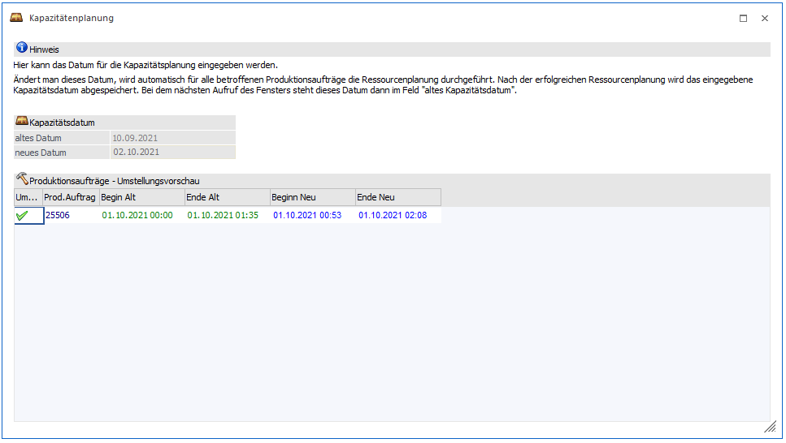

Wenn in den PPS-Parametern die Option "Ressourcengruppen - Kapazitätsplanung" aktiviert ist, dann wird - entsprechend der Einstellung in der Ressourcengruppe - bei der Anlage von Projekten ggf. nur eine Grob-(Kapazitäten)planung durchgeführt.
Im Menüpunkt
1 WinLine PPS
1 Produktion
1 Kapazitätenplanung
kann nun aus einer Grob-(Kapazitäten)planung eine Feinplanung gemacht werden, wo dann die effektiv verfügbaren Ressourcen verwendet werden.

Nach Aufruf des Menüpunktes wird das Datum angezeigt, wenn die letzte "Feinplanung" durchgeführt wurde. Im Feld
Ø neues Kapazitäten-Datum
wird das Datum eingegeben (es wird immer das alte Datum + 7 Tage vorgeschlagen) bis zu dem die Feinplanung durchgeführt wird.
Durch Drücken der F5-Taste wird die Feinplanung angestoßen, wobei die Daten der "Grobplanung" durch die aktuellen Daten ersetzt werden. In der Tabelle werden die bearbeiteten Projekte angezeigt, wobei jeweils der "alte" Beginn und das "alte" Ende sowie der neue Beginn und das neue Ende (das ggf. durch die Feinplanung geändert wurde) dargestellt werden. Durch Drücken der ESC-Taste wird das Fenster geschlossen.